Fun Projects for your LEGO� MINDSTORMS� NXT!
|
|
Fun Projects for your LEGO� MINDSTORMS� NXT! |
| Multi-Bot Touch Sensors |
|

1
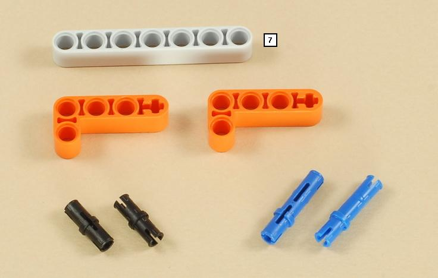
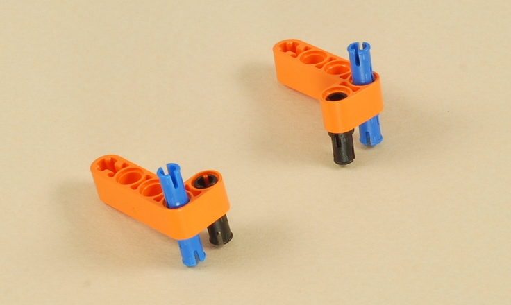
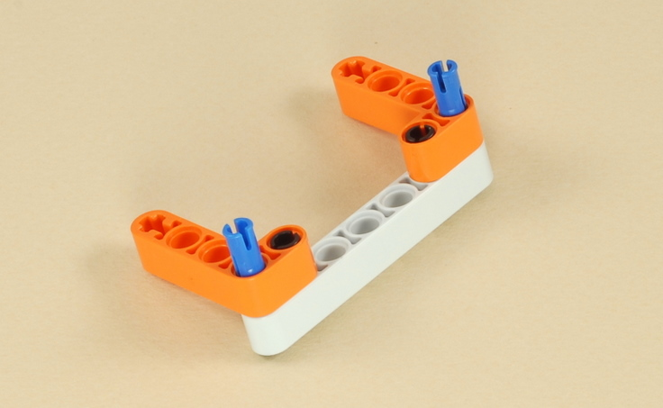
2
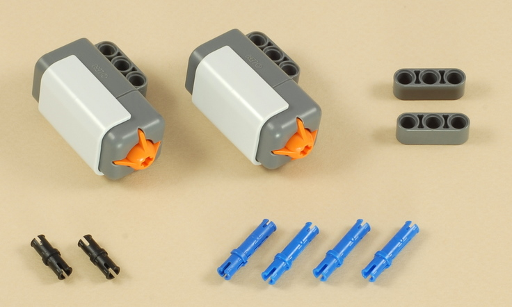
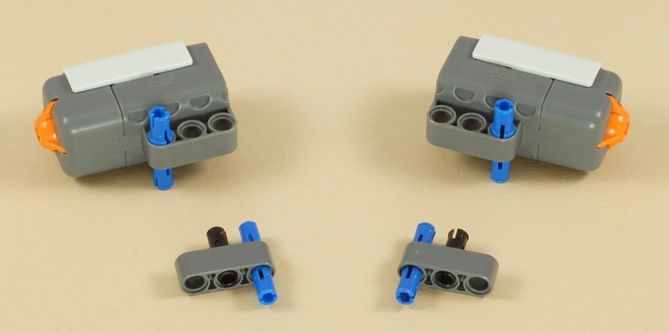
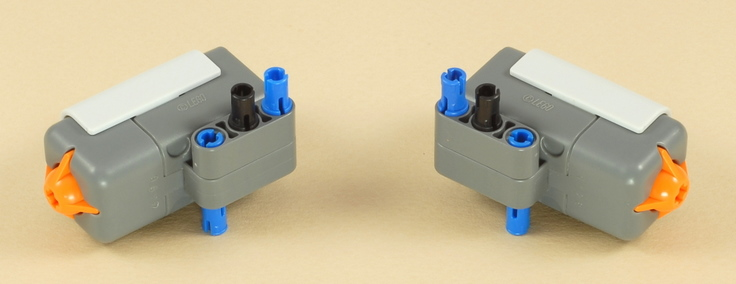
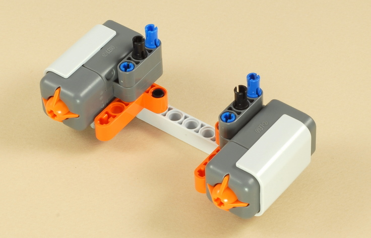
3
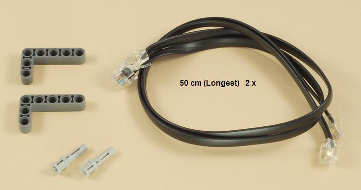
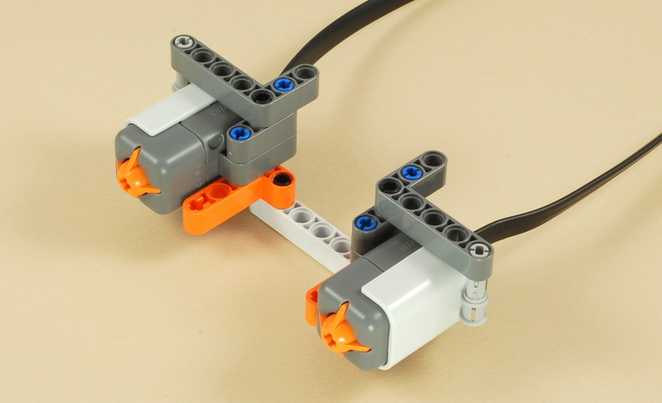
| At this point, the Touch Sensors attachment can be
used as a two-button wired remote control for Multi-Bot, as shown below.
Attach the wires to ports 1 and 2 on the NXT. Continue with the instructions below to convert the two-button remote control into a two touch sensor front bumper for Multi-Bot. |
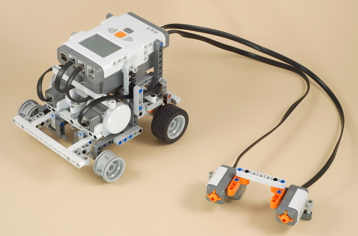
4
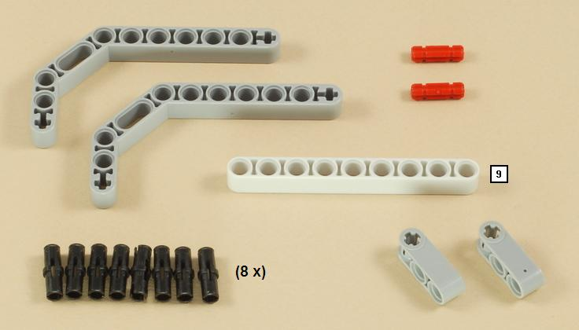
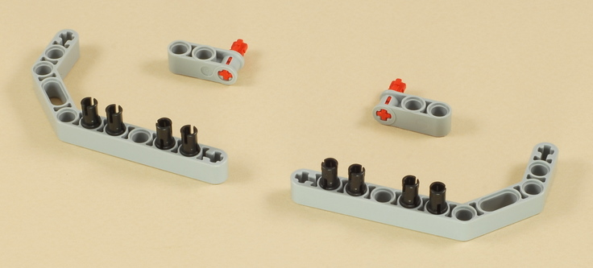
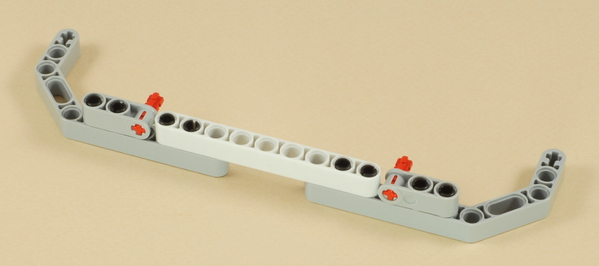
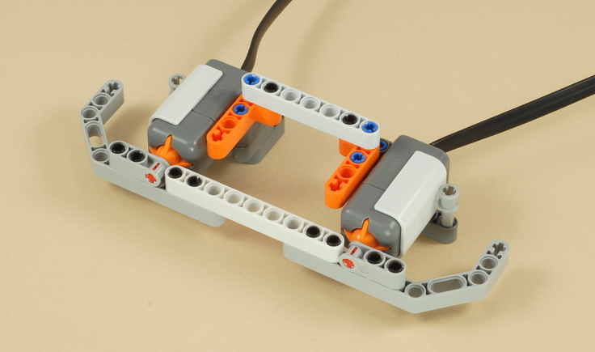
5
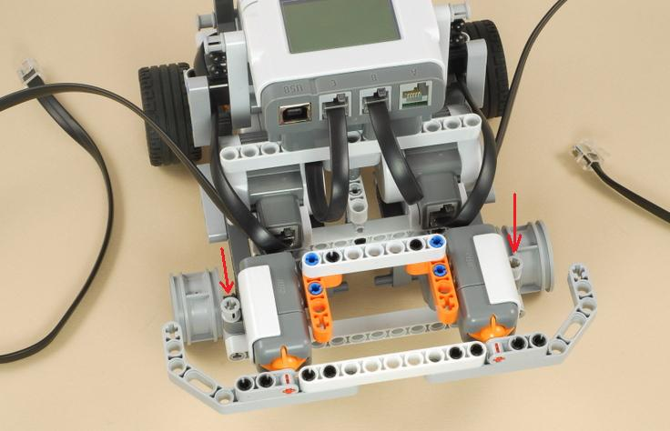
| The Touch Sensors attachment will attach to the front
of Multi-Bot by pushing in the two bushed pegs as shown above. The wires should be connected so that the left touch sensor is attached to port 1 on the NXT, and the right touch sensor is attached to port 2 on the NXT. The long wires will leave a lot of extra wire. The pictures below show one way to route and clip the long wires to keep them out of the way. |
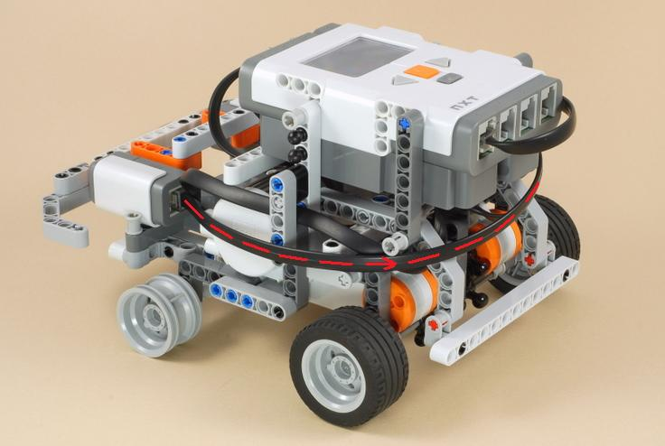
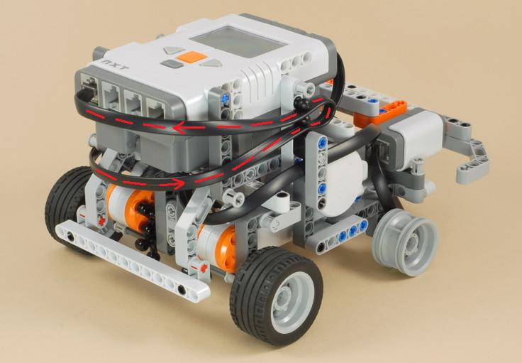
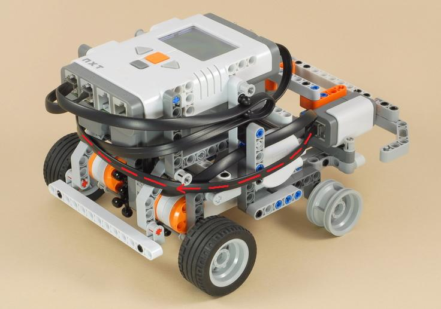
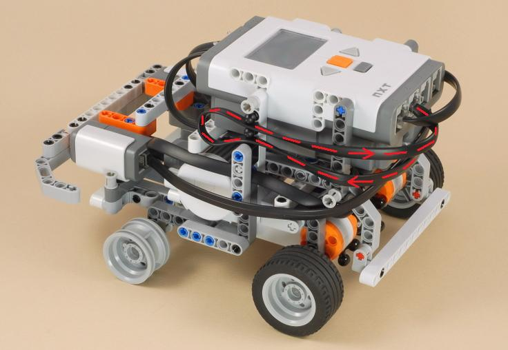
|
Copyright
�
2007-2010 by Dave Parker. All rights reserved. |